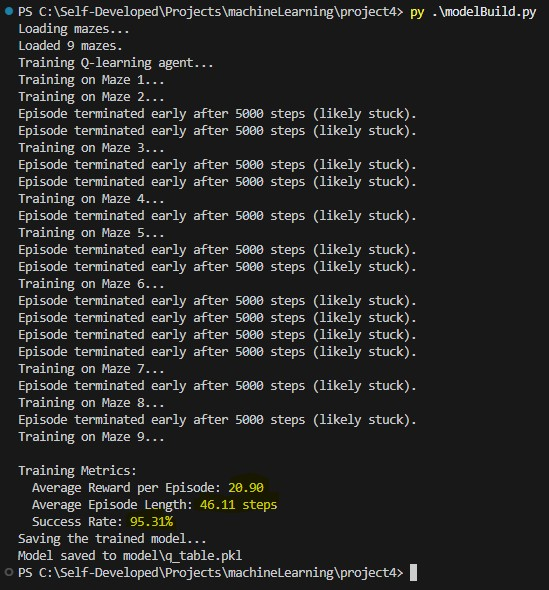

Project 4: Maze Solver Model Builder (Reinforcement Learning)
Reinforcement Learning to resolve the maze
- Implements a Q-learning algorithm to train an agent for solving mazes.
- Incorporates movement rewards and penalties, including incentives for exploration and penalties for moving away from the goal or staying still.
- Allows configuration of training parameters such as learning rate (alpha), discount factor (gamma), and exploration rate (epsilon).
- Tracks training metrics for performance evaluation and bug fixing.
- Supports saving the trained Q-table model for future use and testing.
This is an example for how the creation works and what debugging and feedback steps are includuded in the CLI:

import os
import json
import numpy as np
import pickle
from collections import deque
class MazeEnv:
def __init__(self, maze, start, goal):
self.maze = np.array(maze)
self.start = tuple(start)
self.goal = tuple(goal)
self.position = self.start
self.actions = [(0, 1), (1, 0), (0, -1), (-1, 0)] # right, down, left, up
self.previous_direction = None # To track the previous action
self.visited_states = set() # To track visited states
def reset(self):
self.position = self.start
self.previous_direction = None # Reset the direction tracker
self.visited_states = set() # Clear visited states
return self.position
def step(self, action):
x, y = self.position
dx, dy = self.actions[action]
nx, ny = x + dx, y + dy
# Check bounds and walls
if 0 <= nx < self.maze.shape[0] and 0 <= ny < self.maze.shape[1] and self.maze[nx, ny] == 0:
self.position = (nx, ny)
# Check if goal is reached
done = self.position == self.goal
reward = 10 if done else -1
# Movement incentives
if not done:
current_distance = abs(x - self.goal[0]) + abs(y - self.goal[1])
new_distance = abs(nx - self.goal[0]) + abs(ny - self.goal[1])
if new_distance < current_distance:
reward += 5 # Reward for getting closer
elif new_distance > current_distance:
reward -= 1 # Penalty for moving away
if self.position == (x, y): # No movement
reward -= 10
# Check for direction change
if self.previous_direction is not None and self.previous_direction != action:
reward -= 2 # Penalty for changing direction
# Reward for visiting a new state
if self.position not in self.visited_states:
reward += 5 # Reward for exploring
self.visited_states.add(self.position)
# Update the previous direction
self.previous_direction = action
return self.position, reward, done
def load_mazes(folder):
"""Load JSON mazes from the specified folder."""
files = [f for f in os.listdir(folder) if f.endswith(".json")]
mazes = []
for file in files:
with open(os.path.join(folder, file), "r") as f:
maze_data = json.load(f)
mazes.append(maze_data)
return mazes
def train_q_learning(mazes, episodes=5000, alpha=0.1, gamma=0.9, epsilon=1.0, max_failed_attempts=10, max_steps=5000):
q_table = {}
total_rewards = []
episode_lengths = []
successes = 0
for maze_idx, maze_data in enumerate(mazes, start=1):
env = MazeEnv(maze_data["maze"], maze_data["start"], maze_data["goal"])
failed_attempts = 0
print(f"Training on Maze {maze_idx}...")
for episode in range(episodes):
state = env.reset()
done = False
total_reward = 0
steps = 0
while not done:
steps += 1
if steps > max_steps:
print(f"Episode terminated early after {max_steps} steps (likely stuck).")
failed_attempts += 1
break
if np.random.random() < epsilon:
action = np.random.choice(len(env.actions)) # Explore
else:
action = np.argmax(q_table.get(state, [0, 0, 0, 0])) # Exploit
next_state, reward, done = env.step(action)
total_reward += reward
if state == next_state:
reward -= 20 # Penalize staying in the same place
q_values = q_table.get(state, [0, 0, 0, 0])
q_values[action] += alpha * (
reward + gamma * max(q_table.get(next_state, [0, 0, 0, 0])) - q_values[action]
)
q_table[state] = q_values
state = next_state
total_rewards.append(total_reward)
episode_lengths.append(steps)
if total_reward >= 10:
successes += 1
if failed_attempts >= max_failed_attempts:
print(f"Skipping Maze {maze_idx} after {failed_attempts} failed attempts.")
break
epsilon = max(0.01, epsilon * 0.995) # Change epsilon faster or slower convergence to exploitation
avg_reward = np.mean(total_rewards) if total_rewards else 0
avg_length = np.mean(episode_lengths) if episode_lengths else 0
success_rate = (successes / (len(mazes) * episodes)) * 100 if len(mazes) > 0 else 0
print("\nTraining Metrics:")
print(f" Average Reward per Episode: {avg_reward:.2f}")
print(f" Average Episode Length: {avg_length:.2f} steps")
print(f" Success Rate: {success_rate:.2f}%")
return q_table
def save_model(model, folder, filename):
"""Save the trained Q-table to a file."""
os.makedirs(folder, exist_ok=True)
filepath = os.path.join(folder, filename)
with open(filepath, "wb") as f:
pickle.dump(model, f)
print(f"Model saved to {filepath}")
if __name__ == "__main__":
# Define paths
maze_folder = "mazes"
model_folder = "model"
model_filename = "q_table.pkl"
# Load mazes
print("Loading mazes...")
mazes = load_mazes(maze_folder)
print(f"Loaded {len(mazes)} mazes.")
#training parameters
episodes = 7000
alpha = 0.5 # Learning rate higher means more weight on new information and lower means slower learning but smoother convergence
gamma = 0.99 # Discount factor Long-term planning for high and shortterm for low
epsilon = 0.9 # Initial exploration rate
max_steps = 5000 #max steps to avoid infinite loops
max_failed_attempts = 10
# Train Q-learning agent
print("Training Q-learning agent...")
q_table = train_q_learning(mazes, episodes=episodes, alpha=alpha, gamma=gamma, epsilon=epsilon, max_failed_attempts=max_failed_attempts, max_steps=max_steps)
# Save the trained model
print("Saving the trained model...")
save_model(q_table, model_folder, model_filename)